발단
사실 증폭기 Pro는 한참 전부터 눈독을 들이고 있던 모델이었습니다. 실사용하려는 목적은 전혀 아니었고, 생긴 게 앙증맞고 예쁘니 여기다 OpenWrt를 올리면 금상첨화겠다, 라는 생각이었습니다.
제품을 구하기 전에 미리 하드웨어 정보를 알 수 있으면 좋을 텐데, 이 모델의 내부 사진을 찾기가 쉽지 않네요. 가끔씩 생각날 때마다 찾아보길 반복하다가 2019년 8월 말에 운좋게 분해기를 하나 발견했습니다.
뒷면 스티커 아래에 나사구멍이 숨어있었군요. 게다가 보드엔 시리얼 포트까지 떡하니 나와있네요. 괜찮아 보이는데요? 마침 그때 알리에서 $11.5에 팔길래 만약 실패하더라도 큰 부담이 안 되겠다 싶어 바로 하나 주문했습니다.
…
지금 와서 보면 성급한 충동구매였는데… 정말 가격이라도 싸서 다행이었네요.
분해
외관은 이렇게 생겼습니다.
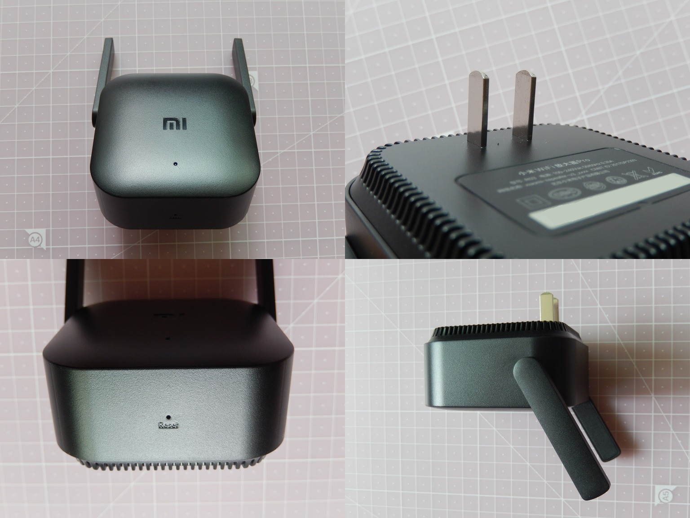
뒷면 스티커를 과감히 떼면 나사구멍 하나가 드러납니다.

걸쇠의 위치입니다.
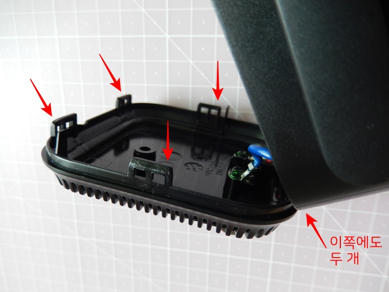
보드의 뒷면.
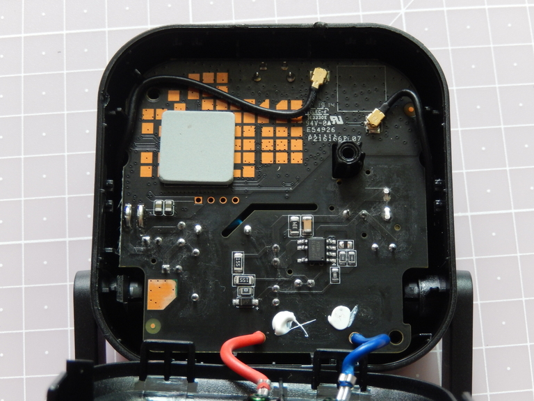
보드의 앞면.
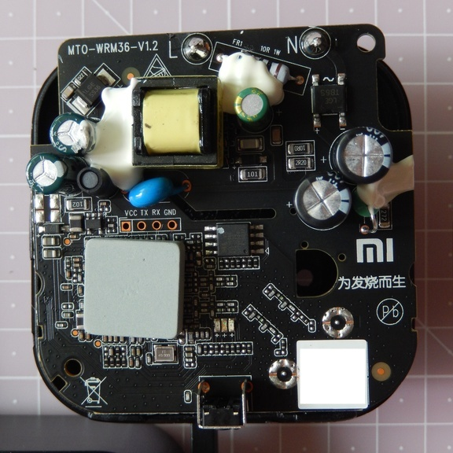
일단 먼저 SoC부터 확인해봅시다. 방열패드를 들어내니 칩 마킹이 보입니다.
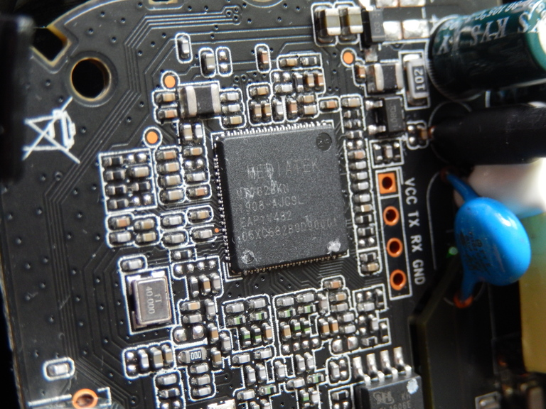
MT7628KN.
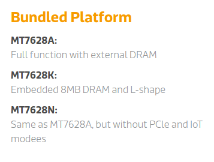
MediaTek 제품설명을 보면 내장 DRAM이 8MB라고 합니다. 8메가아아? 8메가짜리에 어떻게 OpenWrt를 올려요… 망했네요.
처음에 내부 사진을 봤을 때 별도의 RAM 칩이 보이지 않는다는 것에 주목했어야 했는데… 이제 와서 후회해봐야 늦었지만요.
이미 여기서 모든 희망이 사라져 버렸지만, 그래도 이왕 산 건데 시리얼 접속까진 한번 해보죠.
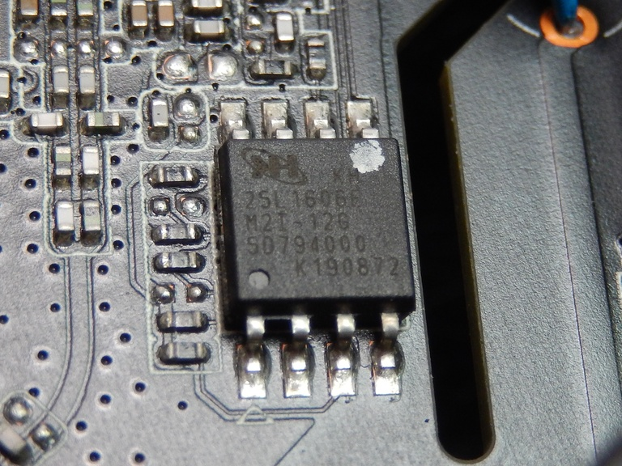
플래시는 MX25L1606E로 2MB. 메모리가 이렇게 쪼끄만할 줄이야… 이쯤 되면 펌웨어가 리눅스가 아닐 가능성도 있겠지요.
콘솔 접속
보드에 적힌 대로 핀 연결을 하고 115200 보율로 접속하니 익숙한 U-Boot 로그가 우리를 반겨줍니다.
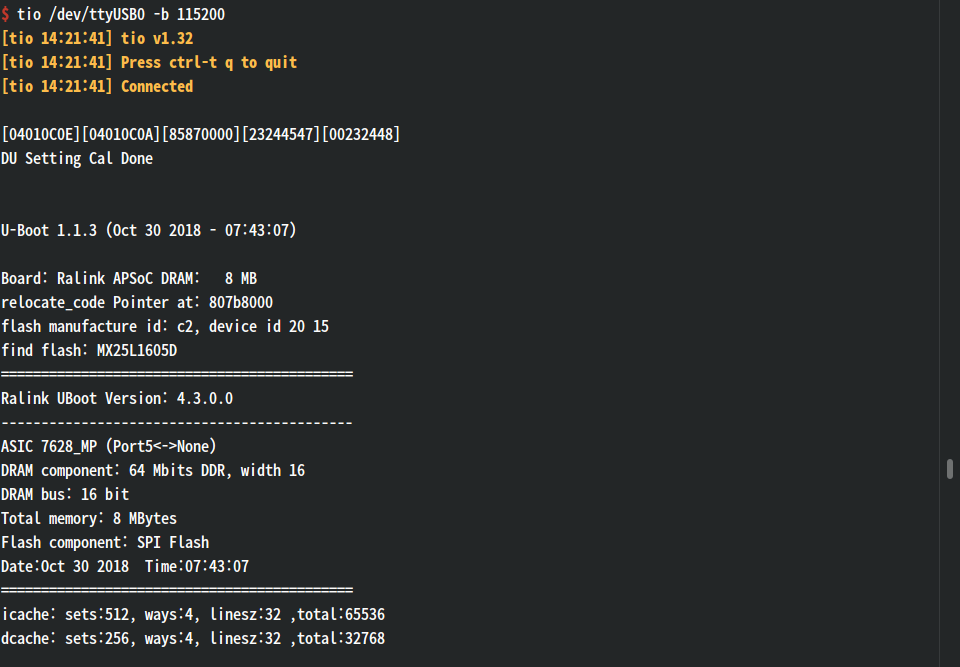
부팅이 끝나고 엔터를 치니 쉘이 열립니다.
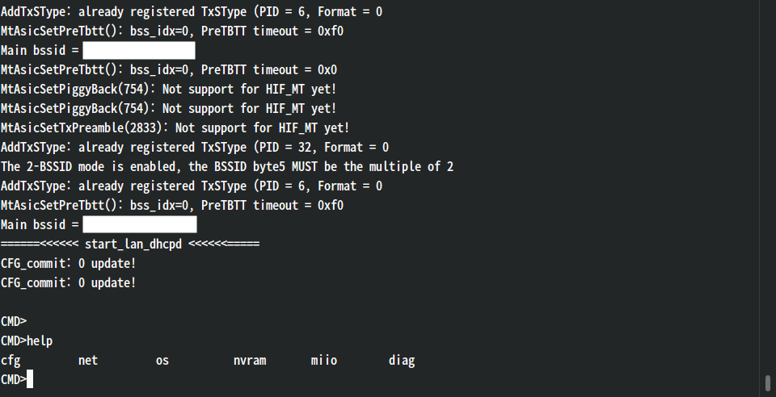
분명 평범한 busybox 쉘은 아니네요.
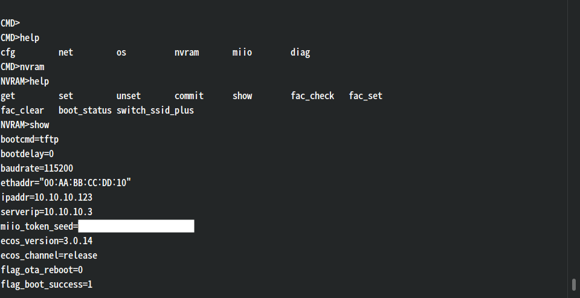
리눅스 대신 eCos를 쓴 모양입니다. (참고로 ipTIME의 몇몇 기종도 eCos를 사용합니다.)
nvram에서 bootdelay 값을 조절하면 부트로더 쉘도 열 수 있겠죠?
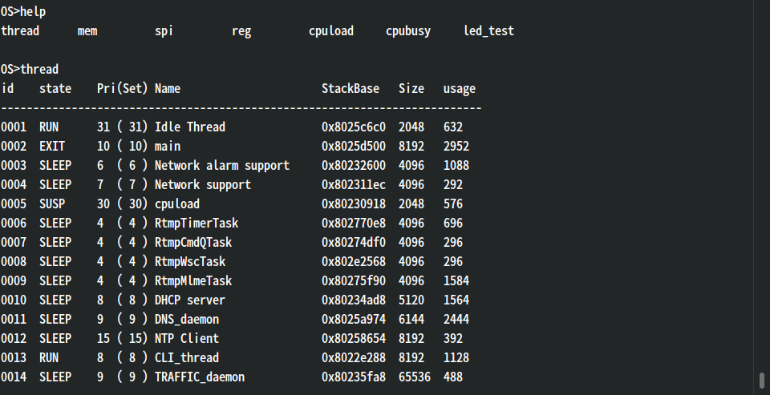
간단한 시스템 정보를 보거나,
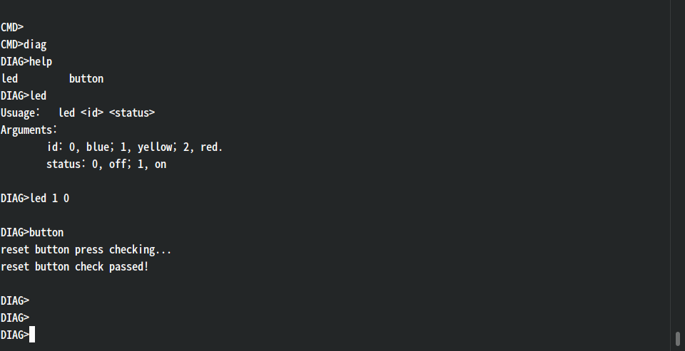
LED와 버튼을 테스트해볼 수 있습니다.
이런 거 말고는 별로 할 수 있는 게 없는 것 같네요. Buildroot를 잘 쓰면 좁은 메모리 공간에 리눅스를 꾸겨넣을 수 있을 것 같기도 하지만, 그렇게까지 써보고 싶은 건 아니라 이쯤에서 마무리하겠습니다.